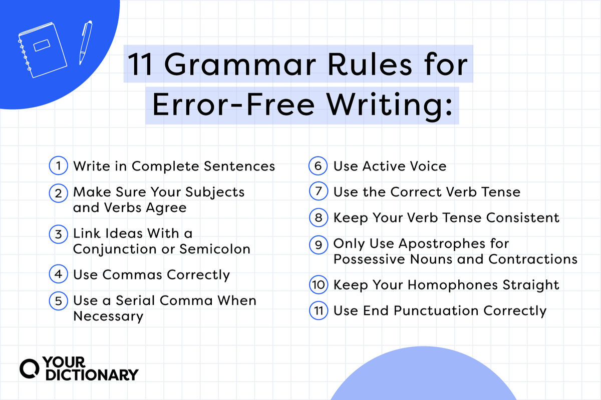

Introduction to English Grammar
Welcome to the world of English Grammar! Here, we will explore the different parts of speech, tenses, sentence structures, and more.
Before we dive in, it's important to note that English grammar is a system of rules that describe how words combine to make meaningful sentences in English. Learning grammar is essential for becoming proficient in English.

Let's begin by exploring the main topics:
- Parts of Speech: Understanding the different types of words in the English language is crucial. We will explore the categories of nouns, verbs, adjectives, adverbs, pronouns, prepositions, conjunctions, and interjections.
- Tenses: Time is a crucial aspect of any language. We will explore the various tenses in English, including past, present, and future tenses. Understanding tenses will enable you to formulate sentences that convey meaning accurately.
- Sentence Structures: Understanding the different ways words can be arranged in a sentence is key to effective communication. We will explore sentence structures, including simple, compound, complex, and compound-complex sentences.
- Punctuation: Punctuation marks play a vital role in indicating the pause, tone, or intent of spoken words. We will explore the various punctuation marks in English and their correct usage.
- Grammar Rules: While there are no hard-and-fast rules, English grammar is generally considered "lazy". This means that it follows certain patterns or rules to minimize confusion. We will explore some common grammar rules, including contractions, negatives, questions, and relative clauses.
Throughout this journey, you will find quizzes, interactive exercises, and engaging examples to reinforce your learning. Good luck and happy learning!